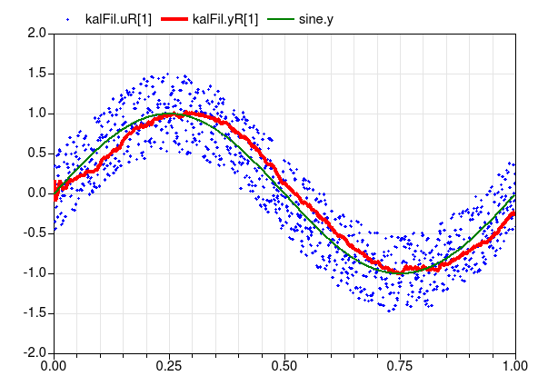

Collection of models that illustrate model use and test models
This package contains examples for the use of models that can be found in Buildings.Utilities.IO.Python27.
Extends from Modelica.Icons.ExamplesPackage (Icon for packages containing runnable examples).
| Name | Description |
|---|---|
| Kalman filter implemented in Python and called from Modelica |
 Buildings.Utilities.IO.Python27.Examples.KalmanFilter
Buildings.Utilities.IO.Python27.Examples.KalmanFilter
Kalman filter implemented in Python and called from Modelica
This example demonstrates the implementation of a Kalman filter
in Python.
The model generates a uniform random number, which is computed
in the Python file KalmanFilter.py by the function
random(seed).
This random number is added to a sine wave and then sent to
the function filter(u) in the above Python file.
The function filter(u) implements a Kalman filter that estimates and returns
the state.
The function saves its temporary variables to a file called
tmp-kalman.pkl.
When simulating this model, the figure below will be generated which shows the sine wave, the sine wave plus noise, which is input to the Kalman filter, and the estimated state which is the output of the Kalman filter.

The code is based on http://www.scipy.org/Cookbook/KalmanFiltering.
Extends from Modelica.Icons.Example (Icon for runnable examples).
| Type | Name | Default | Description |
|---|---|---|---|
| Time | samplePeriod | 0.001 | Sample period of component [s] |